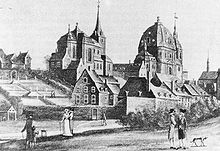

> nieuwsbrief
> 29e jg. - 4e trimester
2011
| Bijdragen over: | Tip |
Zannekin-Ontmoetingsdag te Burtscheid op zaterdag 19 november 2011
Dagorde
10.30 – 11.00 uur: ontvangstbuffet in de
Pfarrheimsaal
van de abdij in de Abteistrasse, Aachen/Burtscheid (alwaar gratis
parkeermogelijkheid).
11.00 uur: opening door
11.15 uur: lezing door dr. Ludger Kremer
over "Rand-,
Grens- en
Exilnederlands: het Nederlands als voormalige minderheidstaal in
Duitsland".
12.30 uur: lunch in restaurant Burtscheider
Quelle, Kapellenstrasse (op loopafstand).
14.00 uur: terug naar abdij. Lezing door
14.45 uur: bezoek aan de abdijkerk en de
schatkamer
o.l.v. de hr. R. Begaß.
15.15 uur: wandeling door het stadje o.l.v.
de hr. M.
Prömpeler.
16.15 uur: Kaffee mit Kuchen.
17.00 uur: afsluit.
Deelname
De deelnameprijs beloopt alles inbegrepen
(ontvangstbuffet,
middagmaal exclusief dranken, museumbezoek, afsluitbuffet) 35
€ per persoon. Aanmelden
– tot uiterlijk 12 november - graag
per e-post (maurits.cailliau@skynet.be) of
telefonisch 0032 57 204
194 (secretariaat) met opgave van het aantal deelnemers en
gelijktijdige betaling
van de deelnamebijdrage. Niet-leden betalen 40 € per persoon. Onze
rekening-nummers
vindt u onderaan pagina 1 van deze Nieuwsbrief.
De
abdij werd in
In
1220
werd de abdij omgevormd en werd ze een cisterciënzerklooster.
De eerder op de Salvatorberg
in Aken wonende kloosterlingen
trokken er in. Onder hun regime werd het klooster met de tijd een meer
aristocratische instelling, waarin vooral de dochters van de Rijnlandse
adel intraden.
De
abten van de eerdere abdij en later hun vrouwelijke opvolgers van de
cisterciënzerorde waren verhuurders van het gebied waarvan de
grenzen
al in het
charter van Hendrik II werden omschreven in 1018. De kloostervoogden
waren aanvankelijk de heren van Merode,
In 1649 werden de rechten van
de verdediging overgenomen door de abdij zelf.
Met
de secularisatie werd de abdij ontbonden in augustus 1802. Alle abdijgoederen werden
genationaliseerd. De
resterende stiftdames ontvingen een pensioen en keerden deels terug
naar hun
families. Slechts twee van hen bleven in Burtscheid en woonden tot hun
dood in
1829, respectievelijk
Na
de stichting van de abdij in 997 had abt Gregor naast de St.-
Nicolaaskapel -
op de plaats van de huidige pastorie - de bouw van het eerste klooster
aangevangen. In het midden van de 14e eeuw werden
deze inmiddels oude gebouwen gerenoveerd.
Tussen
de jaren 1610 en 1620, werden de zuidelijke en westelijke vleugels
herbouwd; in
de jaren 1667 kwam de oostelijke vleugel aan de beurt, die uitgevoerd
werd in
de Maas Renaissancestijl. In de kruisgang van het klooster, vertoont
een
siersteen het wapen van de abdis Henrika Raitz Frentz van
het jaar 1654. De westelijke
vleugel werd gebouwd in 1617, en omvatte het kwartier van de abdis. In
een hoek
op de aangrenzende zuidelijke vleugel leidde een gebogen poort naar de
kelder
van de westelijke vleugel, die een ongeveer 7.20 x
Abdij Burtscheid omstreeks
1790
Met
de afschaffing van de abdij in het spoor van de secularisatie werden de
abdijgebouwen ver-kocht. De kamers waren al snel verhuurd aan een groot
aantal
van de werkende gezinnen. De westelijke en zuidelijke delen van het
abdijgebouw
werden later gekocht door de gemeente Burtscheid.
Met
de zware bombardementen op Burtscheid in april
1944 werden de gebouwen zwaar beschadigd en ten dele helemaal
vernield. In
de kelder van de westelijke vleugel vonden talrijke politieagenten die
bescherming zochten de dood. In november 1950 diende de zuidwestelijke
hoektoren te worden afgebroken omdat hij dreigde in te storten en een
gevaar
vormde voor de voorbijgangers. Alleen het onderste deel, dat eerst in
1953
voorlopig opgekalfaterd was bleef overeind. Aan de onderkant van de
voormalige dakluifels
waren kleine schermen van eikenhout vastgemaakt. Een van deze consoles
heeft het
overleefd en is nu de zetel van de geschiedkundige vereniging die zich
buigt
over verleden en heden van Burtscheid. Op 3 juni
1952 leidden de onderhandelingen met het stadsbestuur
Marienhospital tot
de vrije overdracht van het onroerend goed aan John Hill. In 1961 werd
toestemming
bekomen om bij het Ziekenhuis van de abdij van Sint Mary's een kapel te
bouwen
en voor het creëren van persoonlijke ruimte. De oostelijke vleugel
van
het
abdijgebouw en een deel van het klooster zijn bewaard gebleven en
gedeeltelijk
in de nieuwe gebouwen geïntegreerd. In maart 1988 werd in het
noordelijke deel
van het voormalige klooster de schade van de Tweede Wereldoorlog
hersteld.
Sinds maart 2003, herbergt deze vleugel de schatkamer waarin de
abdijschat is
tentoongesteld.
Bij
de stichting van het klooster gebouwd in 997 door abt Gregorius bestond
er al
een kleine kapel die was gewijd aan St.-Nicolaas. Zo verschijnt voor
het eerst
in het Rijnland Sint-Nicolaas als beschermheilige, met een duidelijk
verwijzing
naar het gebied van de Oosterse Kerk. De kapel was ongeveer op de
plaats van de
huidige pastorie van St.-John. Nog bij leven van Gregory werd met de
bouw van
een grotere abdijkerk begonnen, de eerste die aan de heilige Apollinaris
was gewijd. Ze werd
ingewijd in 1016-1018 en situeerde zich ongeveer op de plaats van de
huidige
parochiekerk van St. Johann. De Apollinariskerk omvatte een schip van ongeveer
Nadat
de kapel blijkbaar te klein werd en vervallen, werd ze herbouwd rond
1350. De
nieuwe, grotere kerk was gewijd aan Sint Johannes de Doper. Ze werd
iets verder
naar het zuiden dan het bestaande gebouw opgetrokken, ongeveer op het
punt waar
de huidige kerk van St.-John staat.
Met
de secularisatie van de abdijkerk door de Fransen werd de site een
Domeingoed. De
Fransen gebruikten het aanvankelijk als een militair magazijn en een
stal. In
1804, bij Napoleons bezoek aan Aken, kon bekomen worden dat de kerk
werd
heropend voor de katholieke eredienst. Na de kerk ontruimd en
schoongemaakt te
hebben, werd er op kerstdag
De
poort naar de abdij van Burtscheid was in 1644 onder de Abdis Maria
Anna von Frentz Raitz
gebouwd.